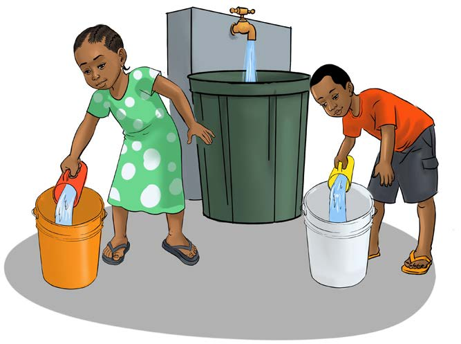

Measurement of Volumes
Volume is the amount of space occupied by an object. It can be measured by using non-standard and standard tools.
Non-standard tools used for measuring volume
Common tools used for measuring volume include spoons, cups and buckets. The following picture shows pupils measuring the volume of water by using cups and buckets.
